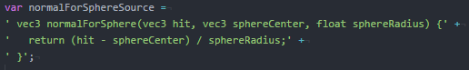
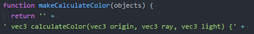

Debes utilizar chrome para visualizar este demo.
Ray tracing es una de las tecnologias modernas de modelado mas interesantes que haya visto. En general, hasta donde se ha visto en el curso, la información proveida a la tarjeta grafica, y los calculos que realizas en ella buscan emular objetos. Las fisica de los objetos, y como se interactuan con ellos, o en otras palabras, la simulación de los objetos son calculados en el procesador. (Soy conciente que existen librerias para la tarjeta grafica que simulan objetos fisicos, i.e. physx, sin embargo dicho tema se sale del alcance de este curso) Hasta las tecnologias de iluminación y sombreado utilizaban trucos para minimizar el impacto de estas sobre el rendimiento del sistema.
En cambio ray tracing lleva a la GPU la simulación de la luz. Se encarga de simular los vectores de los fotones (O al menos un muestreo de estos), calculando sus rebotes para obtener un resultado muy realista. Logra esto haciendo un rastreo retroactivo mediante un rayo lanzado desde la cámara, hasta los objetos de la escena, hasta una fuente de luz. Al igual que cualquier otra tecnología, ray tracing tiene sus limites. Al ser un proceso muy costoso computacionalmente, uno debe ser conciente de cuantos saltos hará el rayo, el tamaño del muestreo que se tomará, la cantidad de fuentes de luz que se colocarán en la escena, etc.
Lo primero que quiero notar es el calculo del vector normal de la superficia donde el rayo está haciendo contacto. Es importante notar que, para el caso de este ejemplo, cada figura utiliza una función GLSL para calcular el vector normal.
Notese que para el caso del cubo se guarda el vector normal dentro del codigo, y se retorna dependiendo del lugar donde hizo impacto el rayo.
La esfera, por otra parte, utiliza una función para calcular su vector normal dado que su vector normal es distinto en todos sus puntos.
 El cilindro es una mezcla de estos dos casos. Para las 2 tapas es posible utilizar un vector normal constante. Sin embargo, en sus lados el vector normal varía con la variación en xz, aunque permanece constante con su variación en y.Tomando en cuenta el vector normal, la dirección del rayo, y las propiedades del material(Glossy, Reflective, Diffuse) con el que hizo contacto, el programa se encarga de generar uno o varios rayos nuevos con nuevas direcciones originados en el punto de incidencia. Los nuevos rayos salen en varias direcciones buscando nuevas superficies con las cuales hacer contacto.
El ejemplo también toma en cuenta ciertos casos especiales. Por ejemplo, dependiendo del color de la superficie de incidencia, puede cambiar el color del rayo, lo cual afectará el color de los objetos con los que haga contacto. También utiliza la información obtenida de los rayos para generar las sombras de los objetos.
Habiendo obtenido esta información, calcula el color de cada superficie, tomando en cuenta cada sombre y cada reflejo de la escena.